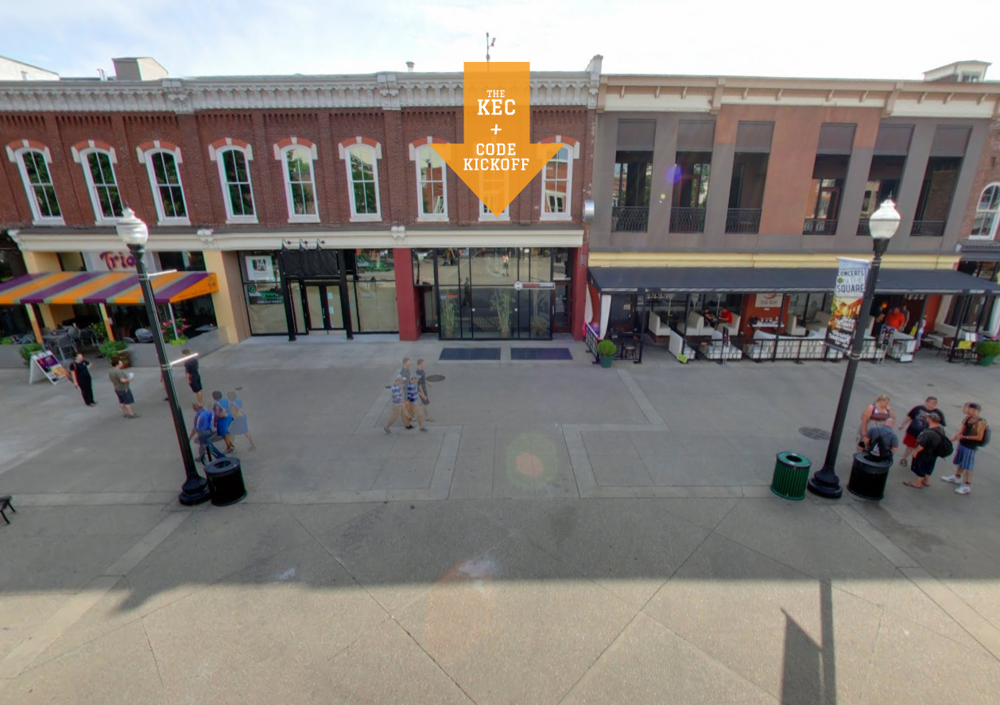
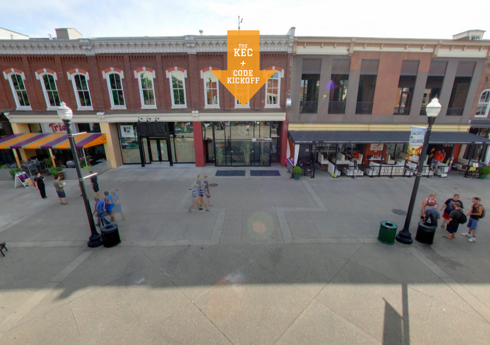

Ted Patterson
Ted Patterson
Code Kickoff
Helping beginners score a programming touchdown
This program and group is what happens when an excited programmer desires to find ways to assemble, collaborate with, and contribute to local junior developers and startups.

Type
Full-time passion
Roles
Founder, graphic designer, product photographer, videographer, video editor, project management, R & D specialist, PR rep, and workshop organizer / promoter
Timeline
Dec 2015 – Present
Preseason practice
Being a kid raised in a smaller town outside of two decently sized cities, as my family ventured into Knoxville or Sevierville I was faced with the idea that there might be bigger world out there. Now, having traveled to a small portion of places around the globe, that early idea couldn't have been more true.
As I transitioned from graphic design roles to interactive media and web development projects I started to think about my past and what it was like to be raised in a rural U.S. community. I knew that I could reach out to local tech groups or use several resources across the web to communicate with other programmers and take healthy steps toward my goals, but, after coming in contact with people in and out of Sevier county, I realized that I was very much in the minority.
This moment and realization is what pushed me to create and organize Code Kickoff.
Pulling together the playbook
Initial planning was done alongside a good friend, Hayden Brown. We both met and fine tuned our front-end dev skills via Free Code Camp and then ramped each other's projects from there.
As with all other ventures, branding is important. I started work on Code Kickoff's overall treatment and feel almost immediately after the name and domain were secured. I'm continually working on web graphics, poster design, social media shareables, handouts, etc. that could pull in our growing demographic of learners and entrepreneurs.
 

After making use of several popular online communities (KnoxDevs, Facebook, Reddit, and local listing sites), I reached out to businesses in Knoxville and Sevierville to find spaces that were capable of housing lecture and hack-a-thon nights. In addition, I selected local spots, so that we could provide a healthy boost to our surrounding community and economy on nights that normally be considered "slow" or "dead".

It didn't take long for the team to deploy a webpage, but we've been trying to up our game with every week that passes so that our offenses are fresh and ready. Also and since our beginnings, we've paired up with the great folks over at KnoxDevs, so that we could our attendees have a seasoned and welcoming community to go to when they're practicing on their own and when times get tough.
Where are we headed?
I firmly believe that as the job market changes and careers get phased out that free oportunities, like Code Kickoff, will be one of the best ways to introduce programming languages and help guide people to take on new skills and habit, in or outside city centers. From here, I am taking steps for Code Kickoff to continually expand and improve in Knoxville and hoping that other communities and cities in the in the southeast show interest or catch on to this trend as well.
Want to know or see more?
Well, jump on over to the Code Kickoff website and we'll get you sorted!